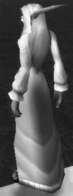
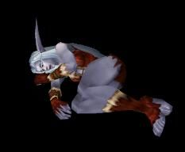

Les Terres de Kirin Tor
Ère du Renouveau [280]
Ère du Conflit [287]
Troisième Ère [406]
Quatrième Ère [334]
Cinquième Ère [187]
Sixième Ère [71]
Septième Ère [62]
Lune de la Force [40]
Décade du Panda [9]
[Cheena] Nos jours heureux
Un pixel de plus sur un tableau surfait[Cheena] Nos jours heureux (2)
Une tache d'encre sur une page gribouillée
Une femme seule au mileu de la foule
Rien d'extraordinaire.
Peut-etre est-ce là le probleme ?
Quel plaisir a-t-on de vivre lorsqu'on ne sort pas du lot
Pourquoi continuer ?
Ceux ... Lire la suite >>>
Un être dont le regard me rend joyeuse[Cheena] Nos jours heureux (3)
Ses paroles sont comme une chanson qui donne envie de taper des mains
Et ses mimiques sont de celles qui font battre mon coeur
L'amour des adultes n'est rien
Rien comparé aux doux baisers de mon enfant
Sa joue douce et ses ... Lire la suite >>>
Il me regarde mais ce n'est pas lui.[Cheena] Nos jours heureux (fin)
Une demande en mariage... mais pourquoi ?
J'aurais hurlé de joie s'il l'avait faite il y a une semaine.
Mais tout change si vite...
J'aimais un démon ? Qu'importe... J'aurais donné ma vie pour lui...
Mais tout a changé et le fro ... Lire la suite >>>
Je porte en mon sein un objet terrible[Mégilenithil] 5 ans...et un démon...
Qui ne verra jamais le jour, malgré tout l'amour que je lui porte
Ma vie contre la sienne...
Notre vie contre la sienne...
Son regard glacé sur ma nuque.
Il ne sait pas.
La chose prend vie en moi
Cet enfant mort-né ... Lire la suite >>>
5 ans....Mégilenithil avait 5 ans exactement aujourd'hui...5 Années de vie jusqu'a maintenan magnifique,sans probleme....[Cheena] Galope, Cheena, galope...
Ses parents étaient partis lui chercher son cadeau a Astranaar.C'est la bas qu'ils l'ont cachées pour qu'elle ne le trouve pas.
5 minutes d'absence suf ... Lire la suite >>>
Elle galope si vite...[Salazare] Faudra recommencer
...que le vent lui pique les yeux. Elle pleure, encore, toujours. La petite fille qu'elle tient serrée contre elle ronchonne. Elle ne sait rien des larmes de Cheena, d'autre que son intuition d'enfant lui laisse voir. Il ne reste rien a présent de c ... Lire la suite >>>
Il est tard.[Larmelune] Frontière des Songes..réminiscences..
J’ai plus rien à boire.
Je m’habille, j’enfile ma cape et je sors.
Je traverse le port en regardant devant moi.
Ils me regardent.
Je sens leurs yeux posés sur moi.
Ils savent qui je suis, ce qui m’est arrivé.
Je suis crevé et ça doit se voir sur ma face. ... Lire la suite >>>
[Clemanas] Cauchemars
Ils sont debout sur les remparts, tous serrés les uns contre les autres en regardant l horizon, leurs yeux épuisés et anxieux guettant l obscurité. La ville est silencieuse, grise et terne, muette par l angoisse de la lune haute qui trône dans le ciel. Les rues sont déser ... Lire la suite >>>
Il se battait , malgré le mécontentement de sa femme.
Il avançait , à coups de lance pour repousser ses ennemis ou au coutelas pour les tuer.
Ils étaient tous là. Tous ceux qu'il aurait aimé tuer.
Il en tua autant qu'il le pouvait , presque rieur.
Tous ces fantôm ... Lire la suite >>>
Décade du Gorille [18]
[Evaneth] lettre inachevée
[justify]On me nomme Emelyne Valkham, je suis née il y a trente ans.[Dolania] En ville
On me nomme Emelyne Valkham, je suis morte il y a trente ans.
On me nomme Emelyne Tilton, je suis née il y a trente ans.
On me nomme Emelyne Tilton, je suis morte il y a dix-huit ans.
Je me ... Lire la suite >>>
La nuit tombée, nous sommes partie du petit village de Goldshire où nous avions fait une escale.[Larmelune] Frontière des songes et réminiscence...II
Nous étions toutes trés impatiente d'enfin venir dans la Capitale.
Les étoiles nous illuminaient de milles lueurs, et la lune nous montrait le chemin.
Apres quelques fraye ... Lire la suite >>>
[i]Une semaine a passée, la lune décroit lentement dans le ciel en laissant l obscurité s'étendre en chape d'autant plus opaque que des nuages lourds et gris glissent en dardant sur la ville et les alantours une pluie cinglante.[Salazare] Je hais donc je suis
Encore une fois, comme toujours à cette heu ... Lire la suite >>>
J’ai mal au crâne.[Evaneth] un appel
J’ai du boire trop de rhum.
Je me lève et j’enjambe le foutoir qui était autrefois la cabine du capitaine.
Je me rince à l’eau fraîche, pas la peine d’en faire trop, j’dois plaire à personne.
Je regarde dans le reflet de l’eau trouble.
C’est ça ma gue ... Lire la suite >>>
[Larmelune] Frontières des songes et réminiscences IIITout ça va mal finir, je le sais, je le sens.
Je n'ai rien à quoi m'accrocher, je voudrais hurler mais personne ne viendra.
Je me consume, je me noie...
Je sais déjà ce qui m'attend, pas de repos pour les gens qui ne vivent qu ... Lire la suite >>>
[Evaneth] Perdu[i]Les jours, les semaines et les mois ont passés, les cendres de la cité attire encore quelques curieux qui essaient de comprendre ce qui a bien pue arriver, de ceux la, peu revienne, il comprennent mais trop tard que les nou ... Lire la suite >>>

Je n'en crois ni mes yeux qui lisent cette lettre, ni mes oreilles qui écoutent ces voix.[Salazare] Pour Helena... et les autres
Toi? Mort? Tué par elle?
Je sens la haine qui grandit à nouveau en moi, la haine, la colère...
J'enrage, personne n'a le droit de nous séparer maintenant que je t'ai retrouvé.
Je la ... Lire la suite >>>
Helena avait 14 ans,[Taleyran] [Mémoires] La quête de l'Epée d'Ishara - 8
Elle vivait à Therramore avec son père Eliandris, forgeron
Helena est morte, on l’a torturée.
On lui a ouvert la poitrine pour en arracher le cœur alors qu’il battait encore.
Helena est morte sans avoir jamais fait de mal a personne.
Ca n’est pas ju ... Lire la suite >>>
Où l'histoire prend un nouveau tournant[Salazare] L'horreur c'est nous...
"La valeur d'une découverte se mesure à la force de la convoitise qu'elle suscite."
Comte Remington Ridgewell, noble de Stormwind.
Cette époque de ma vie a, durant quelques mois, ressemblé à une autre que ... Lire la suite >>>
Aujourd’hui j’ai ouvert les yeux. Par ma damnation j’ai visité l’enfer et j’en suis revenu. Par ma damnation je sais que nos actes ne sont pas sans conséquences. J’étais déjà conscient que le monde ne tournait pas rond. Aujourd’hui j’en suis plus que persuadé.[Evaneth] Vivre est un supplice
De tous les ... Lire la suite >>>
[left][Cymbelîne] Journal d'une voleuse: page 9J'ai échoué, je l'ai sousestimé et je le paye de ma vie...
La douleur a été brève, la mort prompte.
Et maintenant?
Trouveras tu la pierre? Trouveras tu le moyen de me ramener?
J'ai failli, et par ma faute nous ... Lire la suite >>>

Cher Journal,[Zaznek] Des Illusions
J'ai enfin comprit quelle était ma plus grande faiblesse...celle de decevoir, de ne pouvoir être comprise...celle de ne pas être aimée, adulée...pire...de suciter indifférence.
C'est ce qui les rend plus fort...les autres...
Ils n'en ont rien à faire de ... Lire la suite >>>
Des Illusions[Cheena] {Cheena} Combien ?
J'ai cru naïvement que le fait d'être affranchi du Fléau changerait la vision qu'on les autres races de "ma condition". Mais il est désormais clair que tout mes espoirs se sont envolés. Quand bien même je faisais part de mon envie de pacifier mes relations a ... Lire la suite >>>
Combien de femmes t'ont aimé, Salazare[Cheena] Requiem pour Cheena [1/3]
Combien as-tu tuées a petit feu
Combien de femmes t'ont hai, Salazare
Et a combien as-tu accordé tes yeux ?
Combien de gorges se sont nouées de te voir partir au matin
Combien de coeur se sont serrés de ne pas te voir le lendemai ... Lire la suite >>>
Depuis quelques semaines, l'ermite Tauren Falla Sagewind avait reccueilli cette jeune fille et son enfant. Chaque matin, elle leur portait fruits et lait frais, sous sa toile en peau de daim qui dominait toute la vallée des tarides. On pouvait clairement apercevoir les fumée ... Lire la suite >>>[Dolania] Bibliothèque de la Baronne
[i]Aprés un début de soirée assez mouvementée à l'entrée de la villa de la Baronne Dame Amelie Bayle et un garde ne sachant pas ce que voulait dire "aller se vider au petit coin", Dolania se trouva un peu perturbée. La Baronne l'invita chez elle afin de se reposer un ... Lire la suite >>>[Evaneth] Damnée
[Cheena] Requiem pour Cheena [2/3]Je revois encore ces visages, ces innocents, je n'arrive toujours pas à croire qu'ils aient été aussi nombreux...
J'ai cédé, j'ai choisi la voie du repentir, mais je ne me sens pas mieux.
Il m'a brisée, tu t ... Lire la suite >>>

Le réprouvé Lorce'ril offrait ce soir son plus beau concert à la Croisée des Chemins. Son orgue était réputé pour résonner dans tout Undercity d'une marche vibrante d'émotions, sordide et morbide mais d'une qualité musicale inoubliable. Il était rare de voir les réprouvés s' ... Lire la suite >>>
Décade de l'Ours [13]
[Larmelune] Adieu
[i]Voilà, c’est finit.[Evaneth] La damnation te rend belle, petite soeur.
Il est temps de tourner la page et changer de paysage, de fuir ce qui nous rend amer pour chercher dans une autre vie un air moins aigre.
Voilà, c ‘est terminé, c ‘est le dernier trait sur un chapitre terne d’une vie insatisfaite. Quand je regarde ... Lire la suite >>>
[Keshindrae] Besoin Primal
[left]Je regardais le canal, me demandant si ça vallait la peine que je revienne dans cette ville poursuivre mes études des sombres arcanes.
Je ne l'ai pas remarquée tout de suite, cette présence dans mon dos, puis il y eu ce picottement que ... Lire la suite >>>

[i][Cymbelîne] Journal d'une voleuse: page 10
Il est la, allongé sur le sol une mince couverture masquant à demi son corps nu. Elle est là à ses cotés le regard posé sur lui sans trouver le sommeil. Elle se laisse absorber par la contemplation de cet elfe étrange. Il n’était pas « beau », pas comme ... Lire la suite >>>
[i]Je me sens perdue...ça devait pas se passer comme ça...[Ciae] Souvenir
Ce que je perçois à mon réveil n'a plus de saveur...
J'aimerais ne plus penser qu'à l'instant présent, comme je faisais si bien autrefois...pourquoi je n'y arrive plus?
Les moments où je me sens appaisée se ... Lire la suite >>>
[Cheena] Requiem pour Cheena [3/3][i][color=white]Comme un souvenir je m'efface,
Vous m'oubliez et je disparais.
Mais un souvenir revient toujours,
Alors je réapparais, je reviens vous hanter.
Comme un fantome j'erre,
Je traverse la ville et vos vies. ... Lire la suite >>>
Dans les cachots d'Undercity... 7 jours plus tard.[Firalia] Une prêtresse tourmentée (partie 1)
"C'est elle ... ? demanda un petit prêtre réprouvé saisi de tics nerveux
- Oui, Docteur, répondit le garde. Nous l'avons retrouvée sur les lieux du massacre. Ses cris ont interrompus la cérémonie.
- Je vais l'examine ... Lire la suite >>>
Les yeux verts d’une jeune fille étendue s’ouvrit en un sursaut.[Firalia] Une prêtresse tourmentée (partie 2)
Elle se leva lentement, scrutant chaque détail de la pièce sombre et nue qui servait de cabinet noir. Rajustant consciencieusement l’ample robe blanche qui lui servait d’habit de novice, elle fit tournoyer se ... Lire la suite >>>
Selon la coutume, il était d’usage que les novices cousent elles-mêmes toutes leurs tenues, d’apparat ou commune, pour les faire bénir lors de leur ordination.[Lalita] Une supplique pour Elune
Ainsi, des tissus de tous coloris, de toutes les textures circulaient ; et même, quelques dentelles, quelques per ... Lire la suite >>>
Alors que le crépuscule dardait ses derniers reflets dans le ciel mauve de la bienheureuse ville de Darnassus, et que les derniers passants regagnaient leur demeures pour la nuit, une petite silhouette, la nuque courbée, les épaules tassées, se dirigeait aussi discrètement q ... Lire la suite >>>[Lalita] Le papillon et l'épée
Une musique entraînante, forte et joyeuse, s’échappait de la salle de bal, courait dans les couloirs de la demeure illuminée, s’insinuant sous la porte d’un boudoir charmant.[Mystiruis] Une page se tourne
Une jeune femme en sortit, radieuse, ses cheveux blancs brillants nattés, retenus par une barrette ... Lire la suite >>>
[b]Une chambre chaudement decorée, de lourd rideaux cachant la lumière du jour. Un feu crépitant dans une cheminée. Neige endormie d'un profond sommeil, son louveteau au creux de ses pattes.Un Volet qui claque battu par la tempête qui fait rage. Un grimoire illuminé d'une si ... Lire la suite >>>[Gwendolline] La Danse des Esprits
[justify]Une lourde nuit tomba sur Azshara...[Mystiruis] Songe
Neysha se rendit au campement des Grumegeule afin d'apporter soin au blessé des précédents jours...
Depuis l'invasion du fléau, la zone avait connu des épisodes d'hostilité grandissant et ses derniers jours avaient été enco ... Lire la suite >>>
[b]Solitaire, comme toujours, lors de ses longues chevauchées, avec pour seul compagnon, Satan, son destrier lourdement harnaché et Neige sa louve, Myst parcoure les montagnes du Berceau de l'hiver remplissant ses sacs d'herbes si précieuses, laissant ses pensées vagabonder ... Lire la suite >>>
Lune d'Agilité [16]
Décade du Tigre [5]
[Randal] Un soir à Theramore.
La nuit était tombée à Theramore et Randal revenait d'une longue journée d'entraînement sous le soleil brulant des Tarides. Il s'apprêtait à regagner le port de Menethil, mais son regard se posa sur l'un des deux bateaux qui ne quittait que rarement Theramore. Depuis un mom ... Lire la suite >>>[Firalia] Les démons de minuit
Un long cri retentit dans la nuit.[Avelornfeld] Un jour pas comme les autres..
Moite, les cheveux en bataille, Firalia de Mambourg-Ecleocle, se leva sur son séant, ses beaux yeux verts papillonnant encore de terreur. Soupira de soulagement. Par la Lumière, ce n’était qu’un cauchemar… !
D’une main nonchalante, elle c ... Lire la suite >>>
Je me rêveillais par la douce lueur du soleil qui vint frôler mes yeux, aujourd'hui c'était la rentrée.. J'avais horreur de l'école, je pris ma baudruche, j'allais me mettre en avant pour l'école de Ruisselune, mais soudain Papa m'interpela avant que je ne quitte la maison. ... Lire la suite >>>[Avelornfeld] Mon adolescence
J'avais 14 ans aujourd'hui, je me leva en pleine forme, et je m'habilla pour rejoindre mes parents dans les champs. Je pris la fourche, et je commença à empiler les bottes de foins. Soudain, je revis les Chevaliers de la Sainte-Croisade passés, je les voyait tout les jours e ... Lire la suite >>>[Avelornfeld] La Nouvelle Vie
Quand j'ouvrit les yeux, une odeur forte empestait l'air, et le bourdonnement des mouches voir une scène assé sordide..
Ce n'était donc pas un cauchemard, mes parents étaient donc bien mort assasinés dans un champ, je me mis en boule et je commença à pleurer toutes mes l ... Lire la suite >>>
Décade du Singe [1]
[Cymbelîne] Guérir
Je connais au présent le vrai goût des larmes
Et le son d'un silence devenu vacarme
Je sais ce que c'est que de t'avoir aimé
Je connais la passion qui s'est mit à saigner
[i]Ferme les yeux et laisse moi te bercer
Le temps des regrets se conjugue au passé
Ferme les ye ... Lire la suite >>>
Décade du Faucon [10]
[Angèlle] Journal d'un Agent double
[Uter] Brume et tempête.1er jour de la Décade du Faucon (Lune d'Agilitté
Chers *********
Après des semaines d'éxil sur l'Ile de la Dispute, à l'Est de Ratchet, je sui ... Lire la suite >>>
Uter cachette une dernière lettre avec la cire et se laisse aller sur le dossier de sa chaise. Il pousse un soupir. La nuit est déjà bien avancée. Uter regarde d'un air distrait son bureau où s'amoncellent les lettres et les papiers officiels. <Je n'ai jamais été bon pour la ... Lire la suite >>>[Randal] Retour sur le passé (1/3)
La pluie tombait sans cesse à Sombrivage. Tout était calme. Calme qui fut brisé par le déplacement rapide d'une silouhette sur son destrier. Cet homme portait une armure sombre et son épée était d'une taille impressionante. Son visage était dissimulé sous un lourd casque où ... Lire la suite >>>[Uter] La Maladie et le choix.
Uter attache les fagots de bois avec une lanière de cuir et les tire pour les supporter sur son dos. Une tempête de neige fait rage autour de lui. Emitouflé dans une peau de Yéti qu'il avait bradé à Ironforge, Uter revient de sa récole de bois de la semaine. ... Lire la suite >>>[Uter] Le début de la formation.
Uter se détend tranquilement sur une chaise, sur son balcon devant sa maison. La tempête de neige s'est arrêté, et il profite tranquilement du paysage du Dun Morogh encore ensevelit sous plusieurs couches de neige. Bien emmitouflé sous plusieurs habits de laine et son mantea ... Lire la suite >>>[Uter] Les cours, et leur difficultés.
Epuisé après une journée de combat avec son ordre, Uter s'avachit sans prendre le temps d'enlever son armure, sur un fauteuil à Dun Morogh. Fatigué, épuisé, il s'endort lentement.[Randal] Retour sur le passé (2/3)
*Les souvenirs ressurgissent lentement*
Le petit Uter est assis dans une salle très éclairé ... Lire la suite >>>
L'armée orc poursuivait son chemin le long du chemin de Sombrivage. Les créatures peuplant la forêt se réfugièrent, même les bêtes les plus féroces étaient effrayés par ces hideuses face verte, défiguré par d'énormes dents.[Angèlle] Journal d'un Agent double
Tout était paisible à Auberdine. Eliralit ... Lire la suite >>>
[Uter] Manipulation.3ème jour de la Décade du Faucon ( Lune d'Agilité ) - Septième Ère
Chers *******
La phase 3 de ma mission avance à grands pas. J'instore la confiance.
[img_left]669_Johana/790_Iron.jpg[/i ... Lire la suite >>>
Uter se réveille lentement. Son armure lui pèse énormément sur son corps. Il se lève doucement, en gémissant d'effort sous le poids de l'armure. Il s'était endormi avec au retour d'un combat. Il défait les différentes lanières de celle-ci et l'accroche lentement au ratelier. ... Lire la suite >>>[Randal] Retour sur le passé (3/3)
Voilà longtemps que le jeune Eliralith avait été reccueilli par la famille Eden. C'était la première fois qu'il voyageait autant et très vite le sentiment d'amitié qui le liait avec Larilia, c'était avec le temps, transformé quelque chose de plus fort : l'Amour.
Ils avaien ... Lire la suite >>>
Lune de l'Esprit [6]
Décade de la Chouette [1]
[Jarel] Une promotion innatendue
Cela faisait quelques temps que la Garde Noire avait sombrée ... L'assassinat de l'inquisiteur Threepwood ... L'engagement de la majorité des anciens au service d'un seigneur trop autoritaire ... Jarel lui avait choisit une autre voie,celle de la Garde d'Hurlevent,il avait é ... Lire la suite >>>
Décade de la Baleine [2]
[Mégilenithil] Aprentissage...
Fin du reve....[Kaeldras] Le Manthas Club
-Mégiiii........
Une douce voix l'apellait.Une voix féminine emplie de chaleur.
-Méégiiiii.....
Elle se fesait du plus en plus forte.Elle ne semblait qu'etre qu'un chuchotement au début mais la elle avait distinctement augmentée de volume.
-Mééégiiii.... ... Lire la suite >>>
Le Manthas Club
Ce soir là, la Lune était à demi couverte d'un épais nuage.
Les rues de Lune d'Argent étaient toujours aussi animées, toujours aussi chaleureuses et savoureuses.
Kaeldras se dirigea vers le ... Lire la suite >>>
Décade du Lapin [3]
[Clemanas] Embuscade dans les hautes terres
“Nous sommes trop peu...”[Elethir Menefaë] [Elethir] Révélations
Oui, cette jeune recrue avait raison, mais devait-on vraiment l’avouer ?
Si nous savions cette bataille perdue, s’en convaincre n’aurait été qu’une manière de plus de perdre. Alors nous nous préparions. Certains aiguisaient inutilement leurs lames ... Lire la suite >>>
Elethir écoutait attentivement les pas qui résonnaient dans le couloir. Quatre mois qu’il attendait une occasion de fuir. Quatre mois qu’il attendait en vain...[Kaeldras] "Opération Aigle Bleu"
S’il ne vivait toujours pas dans les meilleures conditions qui soient, elles s’étaient se ... Lire la suite >>>
Les Traficants
---=========================================---
Mission : "Opération Aigle Bleu"
Fiche : Soldat N°14
Coéquipiés : Soldats N°7, 12 et 15
Armes ... Lire la suite >>>